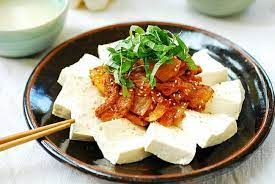

Tofu Kimchi Receipe

Description
A traditional korean dish consisting of boiled tofu and fried kimchi
Ingredients
- oil
- kimchi
- garlic
- sugar
- sesame oil
- pepper flakes
- sesame seed
- boil water
Steps
- put oil in a pan
- 400g of Kimchi
- 1/2 tbsp of Garlic
- 1/2 tbsp of Sugar
- 1 tbsp of sesame oil
- 1 tbsp of pepper flakes
- 1/2 of Sesame seed
- put tofu in a boiling water for 5 min